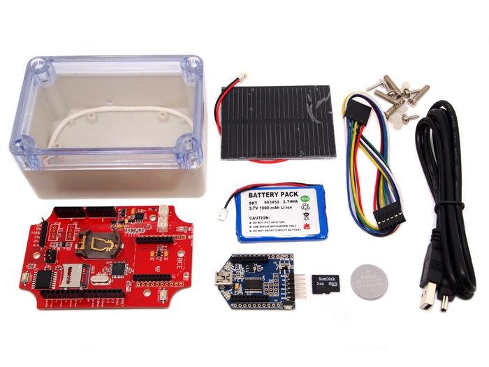

Stalker Kit is a Seeeduino Stalker v2.1 based Wireless Sensor Network node data-logger. Seeeduino Stalker v2.1 is a feature rich Arduino compatible Wireless Sensor Network node. It's modular structure and onboard peripherals like Temperature Sensor, RTC, SDCard interface makes it convenient to log sensor values with accurate time stamp periodically. The Seeeduino Stalker is a candidate for all your tracking, monitoring and control projects.
The Stalker Kit includes all necessary components to work with Seeeduino Stalker v2.0. Stalker Kit can be used outdoors as it comes with a plastic, waterproof enclosure. Hence, you can even put it in the water if you have some special idea. The kit comes with a Solar Panel and a LiPo Battery. They might be used in remote areas like desert or jungle by working just with the solar energy harvested and stored in the LiPo Battery.
Click here to buy

| Component | Description | Quantity |
|---|---|---|
| Seeeduino Stalker v2.1 | The Arduino Compatible WSN Node | 1 |
| Lithium-ion polymer Battery - 980mAh Capcity | Charged from Solar Panel using Stalker V2.1 | 1 |
| SanDisk microSD™ Card 2GB | Logs the sensor values and time-stamp data. | 1 |
| Mini USB cable 110cm | As programming cable used with UartSBee | 1 |
| UartSBee V4 | Provides USB-Serial port to program Stalker V2.1 using Arduino IDE | 1 |
| 6 pin cable | Connects UartSBee to Seeduino | 1 |
| Seeeduino Stalker v2 enclosure | Waterproof plastic case | 1 |
| 0.5w Solar Panel 55x70 | Power Source | 1 |
| CR2032 Button Cell | 1 |
<imagemap>
Image:Stalker_v2.1_and_the_Bees.jpg|thumb|none|700px|alt=Photo of a Seeeduino Stalker v2.1 PCB and the various Bee modules that are compatible with.|The various Bee modules that can be used with Seeeduino Stalker v2.1 (Click on the modules to visit their Wiki pages)
poly 441 45 508 17 567 79 505 120 UartSBee
poly 75 0 353 0 353 102 75 99 WiFiBee
poly 18 105 294 107 295 203 18 203 BluetoothBee
poly 2 212 274 212 275 327 2 326 XBee
poly 18 337 303 338 303 448 15 447 GPSBee
poly 38 459 379 459 379 570 37 571 RFBee
poly 400 55 477 106 424 147 354 97 WiFiBee
poly 307 143 336 136 398 140 392 189 333 187 318 174 302 176 BluetoothBee
poly 290 238 308 221 394 214 396 271 306 283 290 265 XBee
poly 321 353 333 330 395 306 427 364 359 393 335 380 GPSBee
poly 409 464 417 432 488 389 537 445 463 498 426 491 RFBee
poly 455 280 454 215 490 186 683 184 724 211 740 297 706 331 494 333 489 278 Seeeduino Stalker v2.1
poly 570 132 573 13 802 16 803 131 UartSBee
</imagemap>
NOTE: Please note that UartSBee cannot be inserted into the Bee Series socket present on Seeeduino Stalker. The UartSBee is intended for interfacing the other Bee modules (shown in the photo above) to a computer and cannot itself be be inserted into the socket meant for these other Bee modules. There is a separate 5 way pinheader present on UartSBee as well as Seeeduino Stalker for interfacing them to each other. This pinheader is composed of: VCC (to supply power to Stalker), TXD, RXD, DTR (for controlling Stalker's Reset signal) & GND.
If you are new to the "Physical Computing" world and if Seeeduino Stalker v2.1 is the first physical computing platform you want to begin with, then we suggest you to start with Seeeduino.
The following steps will help you assemble the hardware and software resources to get you started with Seeeduino Stalker v2.1
You will require the following hardware for running your first program.
| Seeeduino Stalker v2.1
Buy Here |
 |
 Mini USB Cable
You would probably have this one lying around, or if not, buy one here. We would use this to connect the UartsBee to one of the USB ports on your computer. |
 1 pin dual-female jumper wire
Required for connecting the UartsBee to Seeeduino Stalker.You might already have few lying around your workspace. If not, you can buy a colourful one here. |

| Seeeduino Stalker | UartSBee | |
|---|---|---|
| USB5V | ↔ | VCC |
| RXD | ↔ | TXD |
| TXD | ↔ | RXD |
| GND | ↔ | GND |
| DTR | ↔ | DTR |
Arduino Pro or Pro Mini (3.3V, 8MHz) w/ ATmega 328 from Tools-->Board Menu of Arduino IDE.
DateTime dt(year, month, date, hour, min, sec,week-day(starts from 0 and goes to 6));
DateTime dt(2011, 11, 10, 15, 18, 0, 5);

Arduino Pro or Pro Mini (3.3V, 8MHz) w/ ATmega 328 from Tools-->Board Menu of Arduino IDE.
RTC.now() function.
DateTime now = RTC.now();

Arduino Pro or Pro Mini (3.3V, 8MHz) w/ ATmega 328 from Tools-->Board Menu of Arduino IDE.
RTC.getTemperature() function.
RTC.convertTemperature()
RTC.convertTemperature(); //convert current temperature into registers
Serial.print(RTC.getTemperature()); //read registers and display the temperature
Serial.println("deg C");

This example is a demonstration of interrupt detection from DS3231 INT output. This feature is useful for data-logger functionality where the MCU is put to sleep mode when not in use and DS3231 INT wakes up the CPU periodically. This extends battery power. The complete operation is documented in the code.
Arduino Pro or Pro Mini (3.3V, 8MHz) w/ ATmega 328 from Tools-->Board Menu of Arduino IDE.

The principal application of Seeeduino Stalker v2.1 is data-logging of sensor signal like temperature along with the time-stamp. We have provided 3 sketches along with the DS3231 library demonstrating 3 different implementation. These sketches puts the MCU in sleep mode when not performing data sampling / logging operation. The complete implementation is documented very well in the code. The following section gives an overview :

RTC.enableInterrupts(periodicity) function.
RTC.enableInterrupts(h, m, s) function.
interruptTime = DateTime(interruptTime.get() + 300); //decide the time for next interrupt

The following screenshot shows the current consumption measurement of Seeeduino Stalker v2.1 @ 3.3V input connected to LIPO_BAT. In actual application LIPO_BAT is connected to a 3.7V LiPo battery. Hence, consider the following measurement with a pinch of salt.

Few Seeeduino Stalker users have developed a datalogger functionality for Seeeduino Stalker v1.0. This interesting implementation is mentioned here to highlight a different way of using SD card. Refer to A and B threads at the Arduino Forum.
Arduino-filelogger library used in these is available from Google Code arduino-filelogger project page. These sketches works only with Seeeduino Stalker v1.0. Interested users can port to Seeeduino Stalker v2.1 using the DS3231 library.
Besides the many Bee Series modules, SD card reader mini-USB cable, in a capsule are available for use with Stalker Kit:
Here is the Stalker Kit FAQ,users can list the Frequently Asked Questions here:
If you have questions or other better design ideas, you can go to our forum or wish to discuss.
| Revision | Descriptions | Release Date |
|---|---|---|
| Stalker Kit v0.9b | Initial public release | Aug 3, 2011 |
| Stalker Kit v1.0 | Dec 3, 2011 |
Issue Tracker is the place you can publish any suggestions for improvement or any bugs you think you might have found during use. Please write down what you have to say, your suggestions will help us improve our products.
The Additional Ideas is the place to write your project ideas about this product, or other usages you've found. Or you can write them on Projects page.
Click here to buy :KIT80248P.
This documentation is licensed under the Creative Commons Attribution-ShareAlike License 3.0 Source code and libraries are licensed under GPL/LGPL, see source code files for details.
Links to external webpages which provide more application ideas, documents/datasheet or software libraries.
Copyright (c) 2008-2016 Seeed Development Limited (www.seeedstudio.com / www.seeed.cc)